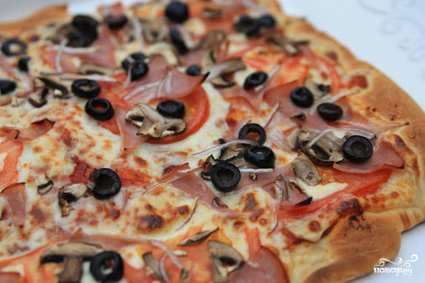

Home
California Pizza Recipe

Ingredients:
- 1 cup warm water
- 1 tablespoon dry yeast
- 1/2 tablespoon honey
- 2 tablespoons olive oil
- 3 cups flour
- 1 teaspoon salt
- 1.5 cups tomato paste
- 1 garlic clove
- 250g mozzarella cheese
- 6 slices ham
- 1 tomato
- 1 red onion
- 6 mushrooms
- 6 black olives
Method:
- Prepare all the necessary ingredients.
- Mix all the ingredients for the dough – water, yeast, honey, olive oil, flour and salt. Mix and knead the dough thoroughly until it stops to stick to the hands. Leave the dough in a warm place for 40 minutes.
- While the dough is rising, make the sauce. Mix tomato paste, chopped garlic and spices (you can use basil and oregano) in a saucepan.
- Put the saucepan on a moderate fire and cook the whole thing until the volume of the mixture reduces approximately twice.
- Sprinkle the risen dough with olive oil, and mash a little.
- Roll out the dough on a lightly oiled baking sheet.
- Smear the dough with the sauce evenly.
- Put topping (mushrooms, ham, cheese, tomatoes, olives, onions) on the pizza.
- Bake for 15 minutes at 200 degrees. Serve hot.
Bon appetit!